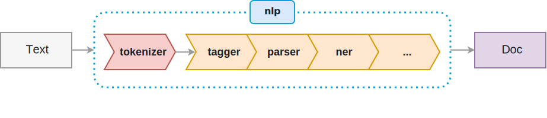
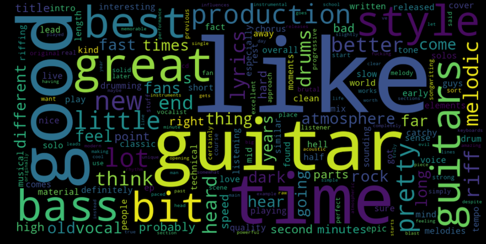
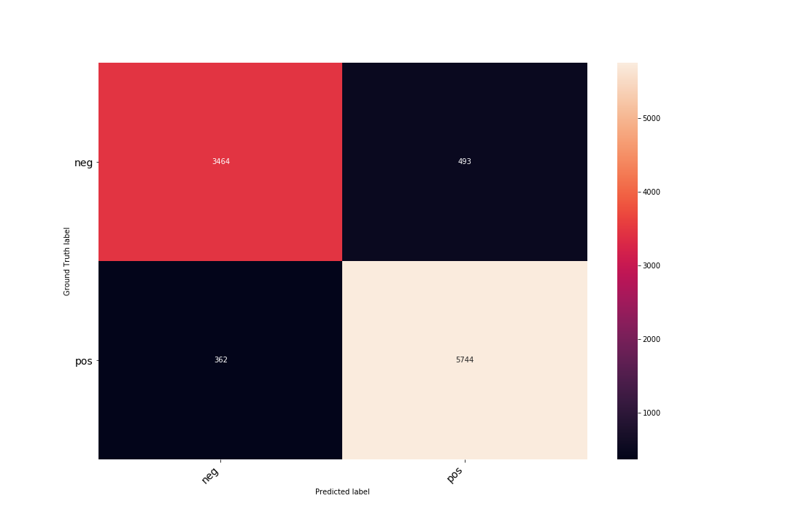

A Sentiment Analysis Classifier
Opinion mining or more formally, sentiment analysis, remains one of the most actively researched topics in natural language processing today. In this capstone project, I scraped over a hundred thousand user-generated metal reviews from the Encyclopaedia Metallum: The Metal-Archives website in order to build a sentiment classifier using deep learning. And although my capstone was solely focused on analyzing metal reviews, the techniques and tools I used can be directly applied to any state-of-the-art NLP workflow.
The Metal-Archives was founded in 2002 and has evolved into the Internet's most comprehensive database covering the metal scene. The site is entirely community driven with millions of users visiting the site daily who actively update and maintain it. The site also happens to be the single largest resource of user-generated metal reviews on the Web.
Unforutnately, MA does not offer an official public developer API to access the database directly. However, the site's Javacript front-end leverages an internal JSON based interface to retrieve entries before rendering them as HTML. After getting explicit permission from MA's webmaster to use that same internal API directly, I wrote and open-sourced the Metal-Archives Query Tool which is a Python based command-line utility that can retrieve entries directly in CSV format. The scrapping process took several days but ultimately generated a corpus with over one hundred thousand reviews of unstructured text to analyze.
Since 2002, the number of reviews have grown steadily before reaching a peek in 2008. Notice that the number of reviews is inversely proportional to the average rating per review as greater diversity tends to offset general fan bias. What's also interesting is that the average rating hit an all-time low in 2010 before recovering as shown in the heatmap and its corresponding plots. It's unclear whether this was truly some industry wide trend or something more idiosyncratic to MA's readership.
{% include heatmap ignore missing %}
Metal is a world-wide phenomenon with new bands emerging from all over the globe. However, metal seems to thrive more so in the United States and Europe versus other markets which makes sense given the genre's historical roots.
{% include avgnumworldmap ignore missing %}
Ratings seem to be evenly distributed regardless of a band's pedigree. For example, Russia has an average score of 76.7% over 1060 reviews while the United States has an average of 76.5% over 29745 reviews. It just goes to show that metal fans are equally critical across the globe!
{% include avgratingsworldmap ignore missing %}
MA has no hard and fast rules when it comes to a band's genre allowing its users to mix and match them as they please. In fact, a hundred thousand plus reviews yielded over three thousand unique genres of metal! However, on further inspection, I was able to refine these categories into a more standardized subset to get a better handle on any inherit genre bias that may exist within the community at large.
The three most popular genres were black, death, and heavy which makes sense given that most extreme metal falls under the first two while the scene's roots lie with the third. The next three, thrash, progressive, and power respectively, are also very popular which is also to be expected given that thrash and power dominated most of the 80s while progressive came to the fore in the 90s. Regardless, this dataset has quite a lot of metal diversity to it which should help my classifier generalize better across all genres of metal.
{% include genres ignore missing %}
Notice that no matter the genre, review scores are fairly uniform throughout. I personally found this very surprising as I tend to believe certain genres are more positively received than others. However, it comes as no surprise to me that nu-metal is generally reviewed more harshly than other genres given its clear stigma among both critics and fans alike.
{% include avgratingbygenre ignore missing %}
MA does not have an official minimum or maximum word count per review. As the site grew in popularity though so did the community's verbosity, reaching a peek average word count per review in 2013 (648). However, since then the average word count per review has pretty much leveled out regardless of sentiment.
{% include avgwordsbyyear ignore missing %}
As in all NLP workflows, I had to decide how to process the unstructured text of each review. All reviews were scraped directly as UTF-8 English text, and as a result I heavily relied on spaCy's English language tokenization engine after removing superfluous whitespace, newline, and accent characters. However, spaCy treats contractions as two separate tokens for its entity recogniztion engine so as part of my general text processing I also expanded all contractions as well. All tokens were then lemmatized to ensure morphologically similar words were treated the same.
spaCy's pipelines are both I/O and CPU intensive since they are neural based. Consquently, I batched processed all reviews over sixteen cores using Python's native multiprocessing library to distribute the load. This resulted in several orders of magnitude of speed-up.

Wordclouds are popular graphs to give a visual sense of both vocabulary and frequency. MA reviews are rich in language as this cloud clearly indicates.

All state-of-the-art NLP models involve first vectorizing a dataset's vocabulary into an n-dimensional continuous semantic space called a word embedding. Popular word embedding models today include Word2vec and GloVe. Unfortunately, because word embeddings are highly dimensional it is typically impossible to visualize them without some form of dimensionality reduction. One very popular technique is the t-distributed Stochastic Neighbor Embedding (t-SNE) which unlike Principal Component Analysis attempts to preserve inter-vector similarity.
t-SNE graphs can be tricky to interpret though, and the perplexity number can have a significant impact on its output. However, as you can see below the groupings are pretty intuitive with certain entities such as years and locations forming tight groups. What's fascinating is that words that are not even remotely similar on the surface can be semantically similar in context. For example, the word vectors for "overproduced", "artifical", and "synthetic" are all considered contextually similar in my embedding space.
{% include tsne ignore missing %}
In addition to visualizating my word embeddings, I also performed some topic modeling on my bag-of-words term frequency matrix in order to discover any hidden semantic structures within each review. I used Latent Dirichlet allocation as my main unsupervised approach and graphed the top 20 topics below. Most reviews did focus on the record as a whole and were mainly concerned with "songs" and "riffs" which is to be expected.
{% include topicmodel ignore missing %}
MA reviews are scored on a percentage scale ranging from 0 to 100%. I treated all reviews with a rating of 80% or higher as "positive" and the rest as "negative" in order to frame my objective function as a binary classification problem. A more nuanced approach would have been to have a "neutral" sentiment in addition to "positive" and "negative" and then treat my objective as a multiclassification problem instead. But in the interest of simplicity, I stuck with binary classification. I then performed a 90/10 split to subdivide my dataset between train and dev sets respectively.
In order to get some kind of baseline performance, I first built a simple model using sklearn's CountVectorizer module to construct a simple term frequency matrix and then fed that into both a Multinominal Naive Bayes and Linear SVC classifier. Both of them performed poorly though, only being able to gauge sentiment a little over half the time - not completely unexpected as traditional bag-of-words/sparse vector approaches typically perform worse than word embedding/dense vector ones. I then turned to training spaCy's built-in text classifier pipeline but fine-tuned it with my own word embedding space.
The results were pretty outstanding and as I was able to achieve an accuracy of over 91%! Below is the final confusion matrix which can be used to fine-tune the model further by looking for any inherit patterns in reviews it classified incorrectly.
Class Percentage Split
Training Set
Test Set
